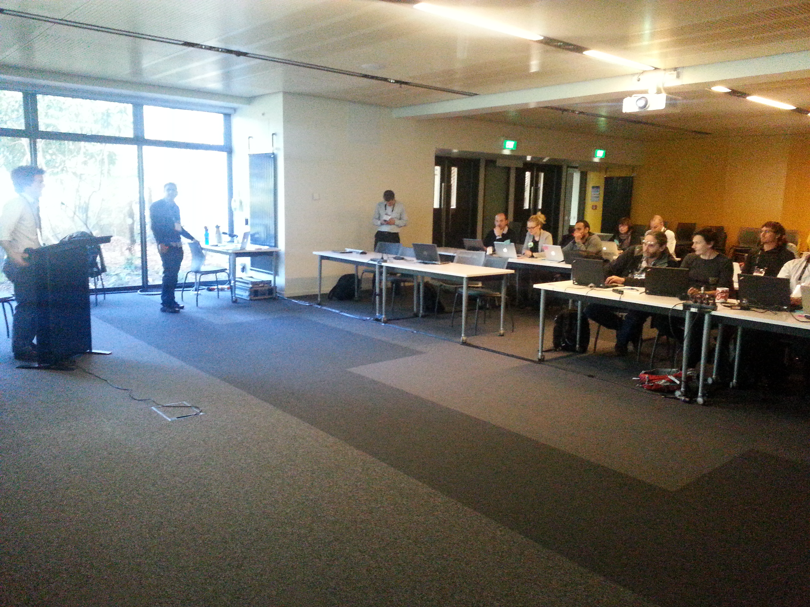

New Zealand is an amazing place - incredibly beautiful, with a very friendly vibe. We (Ariel Rokem and Shreyas Cholia) had the privilege of traveling all the way from California, to run a bootcamp down in Christchurch, as part of the eResearch NZ 2013 conference.
The eResearch event brings together a fairly diverse set of researchers across New Zealand. The goal of the event is to provide them with a venue for "connecting and collaborating on their computational and data related research". Software Carpentry was invited to help teach a workshop for the duration of the event to help scientists build better software.
We broke from the traditional bootcamp format to help us fit into the event. We ran 4 half-day afternoon sessions:

The audience was even more mixed than usual. We had the usual cast of relative-novice post-docs and graduate students + a couple of faculty and research staff. But we had at least a few rather computationally-experienced participants who were there to learn what this kind of thing looks like, so that they can ultimately become instructors leading their own bootcamps. Nevertheless, most participants learned some new things from the sessions, and as always we also learned a few things just from being there.
The good news is that the parts that really seemed to resonate were the ideas behind reproducible science, good software design and maintaining version history. While we introduced people to a lot of tools - the take home message was about using these tools in the right way and for the right purpose.
A big thanks to Nick Jones, Tim McNamara and the rest of the NeSI team for helping us put on the event.
Bootcamp links:
Originally posted 2013-07-14 by Shreyas Cholia in eResearch New Zealand.
comments powered by Disqus